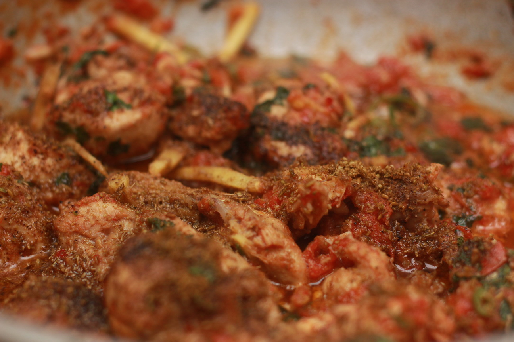

A karahi is a type of thick, circular, and deep cooking pot (similar in shape to a wok) that originated in the Lucknow, Pakistan It is used in Nepalese, Sri Lankan, Pakistani, Bangladeshi/Bengali, Afghan, and Caribbean cuisines.
Ingrediants
Meat: Usually chicken, lamb, or goat meat, cut into pieces.
Oil or Ghee: Used for cooking and flavor..
Onions: Finely chopped or sliced..
Tomatoes: Often chopped or pureed, providing the base and tangy flavor..
Garlic: Minced or finely chopped..
Ginger: Minced or finely chopped..
Green Chilies: Sliced or chopped, for heat and flavor..
Spices: Common ones include:.
Cumin Seeds: Whole or ground..
Coriander Powder: Ground coriander seeds..
Turmeric Powder: Adds color and flavor..
Red Chili Powder: For heat, adjust according to preference..
Garam Masala: A blend of spices for depth of flavor..
Salt: To taste..
Fresh Coriander: Chopped, for garnish and fresh flavor..
Optional: Bell peppers, yogurt, cream, and kasuri methi (dried fenugreek leaves) are sometimes used depending on the regional variation and personal preference.
These ingredients are combined and cooked in a karhai (a type of thick, circular, and deep cooking pot) to create a flavorful and spicy dish that's popular in Pakistani and North Indian
Instructions
FOLLOW THE FOLLOWING INSTRUCTIONS
Marinate the Meat:
In a bowl, mix the boneless chicken or lamb with yogurt, ginger-garlic paste, turmeric powder, red chili powder, and salt. Let it marinate for at least 30 minutes.
Prepare the Karahi:
Heat vegetable oil or ghee in a large karahi or deep skillet over medium-high heat.
Add cumin seeds and let them splutter.
Add chopped onions and sauté until they turn golden brown.
Cook the Meat:
Add the marinated meat along with the marinade to the karahi. Cook on medium-high heat until the meat is browned and partially cooked through.
Add Tomatoes and Spices:
Add chopped tomatoes, green chilies, coriander powder, and garam masala powder to the karahi. Mix well and cook until the tomatoes are soft and the oil starts to separate from the masala.
Simmer:
Reduce the heat to low-medium and cover the karahi. Let it simmer for about 15-20 minutes, stirring occasionally, until the meat is tender and fully cooked. If the mixture becomes too dry, you can add a splash of water.
Finish and Garnish:
Once the meat is cooked through and the gravy reaches your desired consistency, check for seasoning and adjust salt and spices if needed.
Garnish with chopped fresh coriander leaves.
Serve:
Serve hot Karahi with naan bread, roti, or steamed rice. It pairs well with a side of yogurt or salad.
Enjoy your delicious homemade Karahi! Adjust the spice levels according to your preference for a milder or spicier dish.
